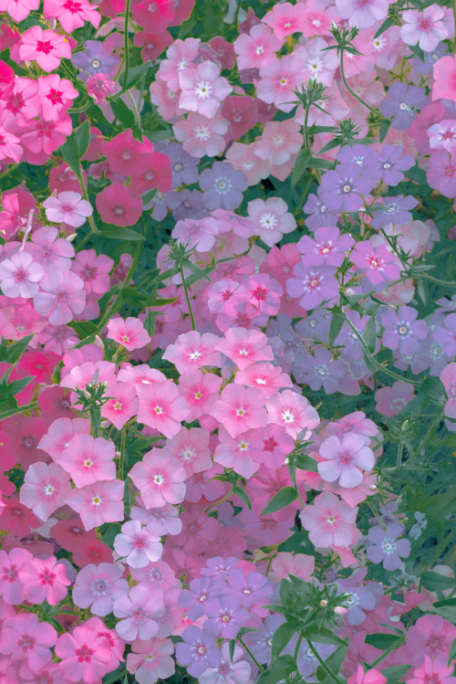

Сортов пионов – великое множество. Есть среди них гиганты и карлики, с махровыми и простыми цветками, роскошные букетные сорта и растения природного облика. Сегодня мы расскажем, как из этого изобилия выбрать те, которые вам наверняка понравятся и не создадут проблем в уходе.Пионы могут быть кустарниками, полукустарниками или даже травянистыми растениями. Они имеют несколько стеблей, крупные корневища и тройчатые или перистораздельные листья. Листовая пластина может быть темно-зеленого, темно-фиолетового или сизого цвета.Размер одиночных соцветий пионов зависит от сорта, и может достигать в диаметре от 15 до 15 см. Их окраска варьируется от белой до темно-красной.Пион является чуть ли не самым древнейшим растением. Древние народы в своих садах выращивали цветы, привезенные с дальних стран. В Персии и Греции выращивали сады для изучения в гимназиях. Именно в это время и появляются описания пиона.
Пион считается роскошным цветком.Его рисовали на полотнах, украшали залы во дворцах. Этот цветок называют королем среди цветов. Пион, как и роза красив и пышен. Пиону приписывают чудодейственные свойства, о его появлении есть много легенд. Для младенцев в Древней Греции делали обереги из кусочков пиона. Предполагалось, что эти бусы защищают от злых духов.
Цветок пиона известен был ещё 1500 лет назад, они росли в Китае. Уже в то время садовники создавали новые сорта пиона. Но простому человеку нельзя было выращивать эти цветы в саду. Этот цветок считался символом богатства и именитости рода. Если сейчас дарят букет из пионов, значит желают добра и благосостояния.
В Японии был выведен древовидный сорт цветов. Этот сорт и необычная форма называется «японская».На Востоке считают, что этот цветок разжигает любовь. И советуют всем, кто хочет найти свою любовь должен ставить в комнату пионы.В наши дни из корневища делают успокоительную настойку, которая помогает при бессоннице. В переводе на русский язык пион означает, исцеляющий.В XVI веке в Российской империи выращивать пионы, могли только монахи и придворные садоводы. В России их привез Петр I. Сорта у которых были обычные лепестки применяли в лечении, а махровые сорта для красоты. На Дальний Восток пион попал из Японии.
История

Одними из первых красоту пиона оценили китайцы. В Поднебесной его культивировали более двух тысяч лет назад, причем долгое время выращивали исключительно в императорских садах. Некоторые сорта настолько высоко ценились, что их продавали только за золото. В Европу благородный цветок попал в XIX веке и сразу же произвел фурор среди садоводов Англии, Франции, Голландии. Особенно в селекции пионов преуспели французские оригинаторы, создав сорта, ставшие классикой и преобладающие в наших садах до сих пор.Конкурентами роз по изумительной красоте и неотразимости всегда были пионы.
Пион были популярны и востребованы уже в античной Европе и древнем Китае. Императорские сады в Китае, раньше были украшены пионами. Около 1500 лет назад, людям было запрещено разводить и выращивать пионы.Пион раньше использовали для приготовления лекарств и целебных снадобий. Греческие войны верили, что этот уникальный цветок лечить от многих болезней и из-за этого в каждом саду при монастыре обязательно были пионы. После Китая, пион сильно полюбили во Франции. Потихоньку этот цветок распространился по всей Европе.
Значение цветка
Пион- символ любви, богатства и чести.В западной культуре пионы служат символом удачи, счастья и счастливого брака. Одним из лучших подарков по праву считается букет пионов- пышных, ароматных и очень нежных цветов, которые нравятся как молодым девушкам так и зрелым дамам.
Посадка
Предпочтительное время для посадки пиона – осень. Если вы приобрели хорошо развитый саженец в контейнере, его можно посадить в любое время, лишь бы почва была не мерзлая и не слишком горячая. Но если это корневище с несколькими почками, весной в грунт его лучше не высаживать. Прорастите сначала в горшке и прикопайте прямо в емкости в саду, а в августе посадите.
Посадочную яму для пионов рекомендуют готовить заранее, чтобы почва уплотнилась и корневище не ушло на глубину. Ее заполняют плодородным субстратом из перегноя, торфа, садовой земли, щедро приправленной комплексными минеральными удобрениями.
Растение не любит кислой почвы. Если это ваш случай, добавьте в смесь 0,5 кг костной муки или древесной золы.
При посадке корневище с почками возобновления заглубите на 3–5 см. Меньше нельзя – почки вымерзнут, но и больше не стоит, поскольку весной они будут долго выходить из земли и куст может не зацвести.
Общие сведения
- Интересные факты:
- Пион считается символом богатства и знатности.
- В наши дни подарить пион означает пожелать добра и благополучия.
- Очень интересные факты:
- Хорошо известна настойка корней пиона, обладающая успокаивающим свойством, помогающая при нарушениях сна.
- Существует мнение, что свое название цветок получил от греческого слова «paionios», что в переводе означает - исцеляющий.
- В российской истории в 16 веке пионы росли и в монастырях, и в царских садах.
- Правильный уход:
- Налейте в ёмкость воды ровно столько чтобы стебли уходили в воду ровно наполовину.
- С той части стебля, которая будет помещена в воду, оторвите все листья. Это не даст им загнивать в вазе.
Сравнение пионов и пионовидной розы
| |
Род |
Класс |
Диаметр цветка |
Страна происхождения |
| Пион |
Пион |
Двудольные |
до 15—25 см |
Сибирь,Монголия |
| Пионовидная роза |
Шраб |
до 10—12 см |
Великобритания |